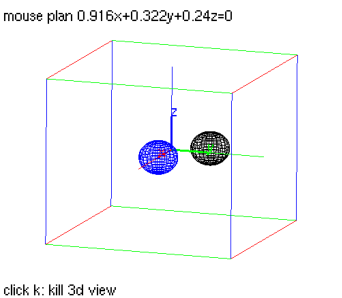
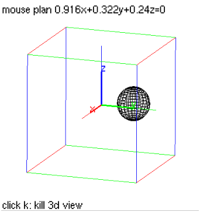

14.14.4 Rotation in space:
rotation
See Section
13.15.4
for rotations in the plane.
The
rotation
command creates a rotation.
rotation
takes two mandatory arguments and one optional argument:
L
, a line (to rotate about).
θ, the angle of rotation.
Optionally,
G
, a geometric object.
rotation(
L
,θ
)
returns a new command which rotations about
L
through an angle of θ.
reflection(
L
,θ,
G
)
returns and draws the rotation of
G
about
L
through an angle of θ.
Examples
Input:
S:= sphere([1,0,0],0.5)
r:= rotation(line(point(0,0,0),point(0,0,1)), 2*pi/3)
color(S,blue),r(S)
Output:

Input:
rotation(line(point(0,0,0),point(0,0,1)), 2*pi/3,S)
Output:
